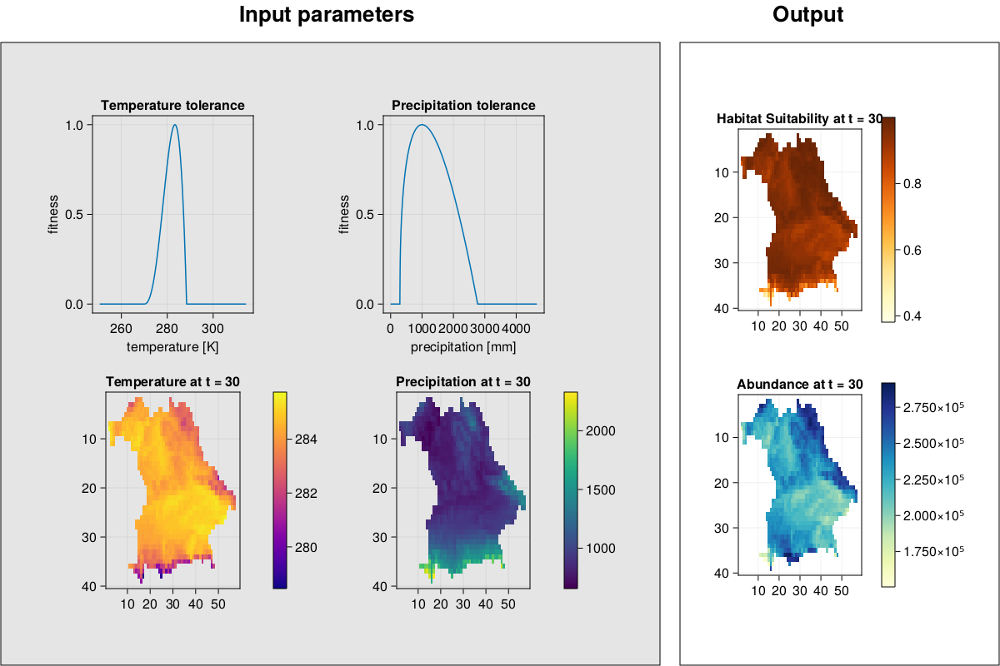
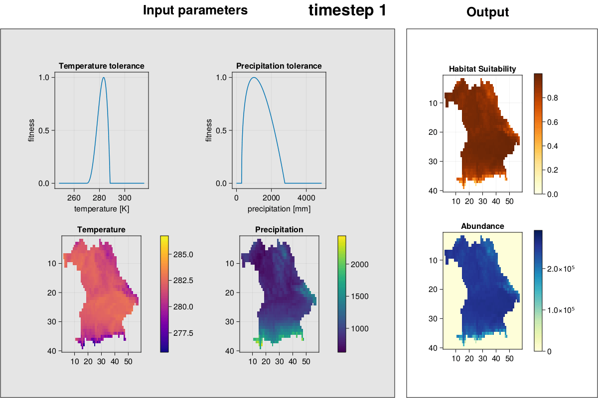

Functions
Index
MetaRange.df_outputMetaRange.gifMetaRange.gif_complexMetaRange.imgMetaRange.img_complexMetaRange.plot_abundancesMetaRange.read_inputMetaRange.run_simulation!MetaRange.save_output
{kind=link}
Function Descriptions
Simulation Functions
MetaRange.read_input — Functionread_input(path::String)Read in the configuration and associated files in the folder and return a Simulation_Data struct.
Arguments
path::String: Path to the configuration file.
Returns
SD::Simulation_Data: Returns the initialised simulation data struct with the first timestep.
Examples
julia> SD = read_input("path/to/config.csv")
precipitation
temperature
...See also run_simulation!(), Simulation_Data
MetaRange.run_simulation! — Functionrun_simulation!(SD::Simulation_Data)Run an ecological simulation.
Take the initialized simulation data SD and run the simulation for the specified number of timesteps.
Arguments
SD::MetaRange.Simulation_Data: MetaRange simulation data struct produced by
Returns
SD::MetaRange.Simulation_Data: Returns the struct with later timesteps after initialisation simulated.
Examples
julia> run_simulation!(SD)See also read_input(), Simulation_Data
Data Functions
MetaRange.df_output — Functiondf_output(SD::Simulation_Data)Create a dataframe from the output of a simulation.
Arguments
SD::Simulation_Data: ASimulation_Dataobject containing the output data.
Returns
- A
DataFrameobject with the following columns:t: timex: x-coordinate of the patchy: y-coordinate of the patchabundance: abundance of the species in the patchreproduction: growth rate of the species in the patchhabitat: habitat suitability of the patchcarry: carrying capacity of the patchbevmort: background mortality rate of the species in the patch
Examples
julia> df = df_output(SD)MetaRange.save_output — Functionsave_output(SD::Simulation_Data)Save all output variables in a .tsv file.
This function writes all output variables abundance - into a .tsv file.
Arguments
SD::Simulation_Data: Simulation_Data object
Returns
- A
.tsvfile with the following columns in theoutputdirectory`:t: timex: x-coordinate of the patchy: y-coordinate of the patchabundance: abundance of the species in the patchreproduction: growth rate of the species in the patchhabitat: habitat suitability of the patchcarry: carrying capacity of the patchbevmort: background mortality rate of the species in the patch
Examples
julia> save_output(SD)Visualization Functions
MetaRange.plot_abundances — Functionplot_abundances(SD::Simulation_Data)Plot the total abundances of a species over time.
Arguments
SD::Simulation_Data: Simulation_Data object
Returns
f::Figure: Figure object
Examples
julia> f = plot_abundances(SD)
julia> fMetaRange.img — Functionimg(SD::Simulation_Data, t::Int, arg::String)Plots the specified output for timestep t.
Arguments
SD::Simulation_Data: Simulation_Data objectt::Int: timesteparg::String: argument on what shall be displayed. Must be one of restrictions, abundances, suitability, temperature, precipitation, carry, growrate, or mortality.
Returns
f::Figure: Figure object
MetaRange.gif — Functiongif(SD::Simulation_Data, arg::String, frames::Int)Plots the specified output for timestep t.
Arguments
SD::Simulation_Data: Simulation_Data objectarg::String: argument on what shall be displayed. Must be one of restrictions, abundances, suitability, temperature, precipitation, carry, growrate, or mortality.frames::Int: number of frames per second
Returns
- The gif is saved under the name "arg.gif" in the output directory.
MetaRange.img_complex — Functionimg_complex(SD::Simulation_Data, t::Int)Plot environment, species environmental preferences, habitat suitability, and abundances for a given timestep.
Arguments
SD::Simulation_Data: Simulation_Data objectt::Int: timestep
Returns
f::Figure: Figure object
Examples
julia> f = img_complex(SD, 19)
julia> f
MetaRange.gif_complex — Functiongif_complex(SD::Simulation_Data; frames = 2)Plot environment, species environmental preferences, habitat suitability, and abundances and create a GIF.
Arguments
SD::Simulation_Data: Simulation_Data objectframes::Int: framerate
Returns
- The gif is saved under the name "all.gif" in the output directory.
Examples
julia> gif_complex(SD)